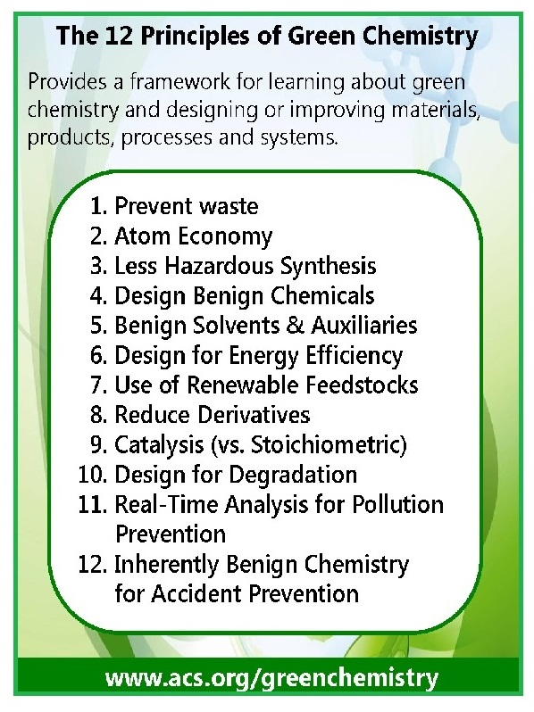
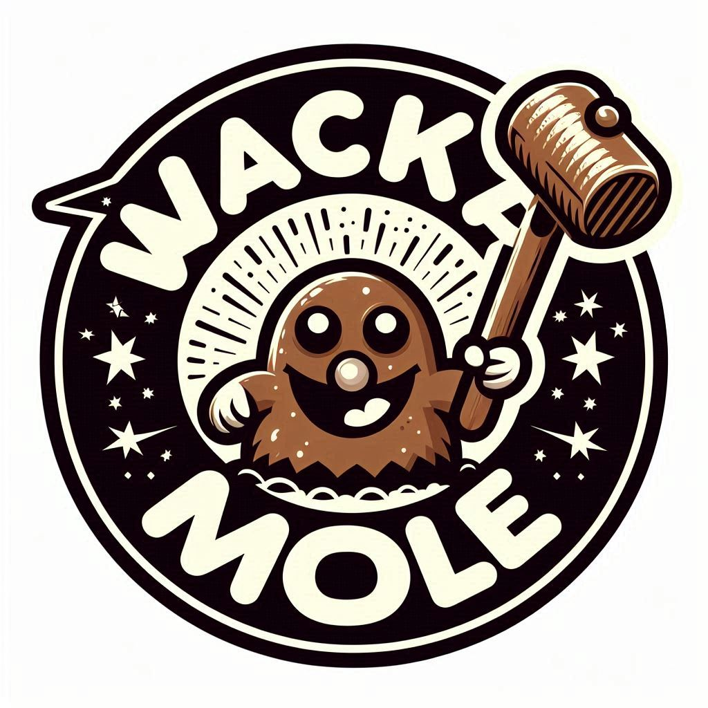

Welcome to the Green Chemistry games hub 
Green Chemistry is about creating safe and sustainable products to minimise the negative impacts of the chemical industry on human health and the environment. Play these games to improve your green chemistry knowledge!

Green Chemistry quiz

Whack-a-scientist
Sustainable meal planner